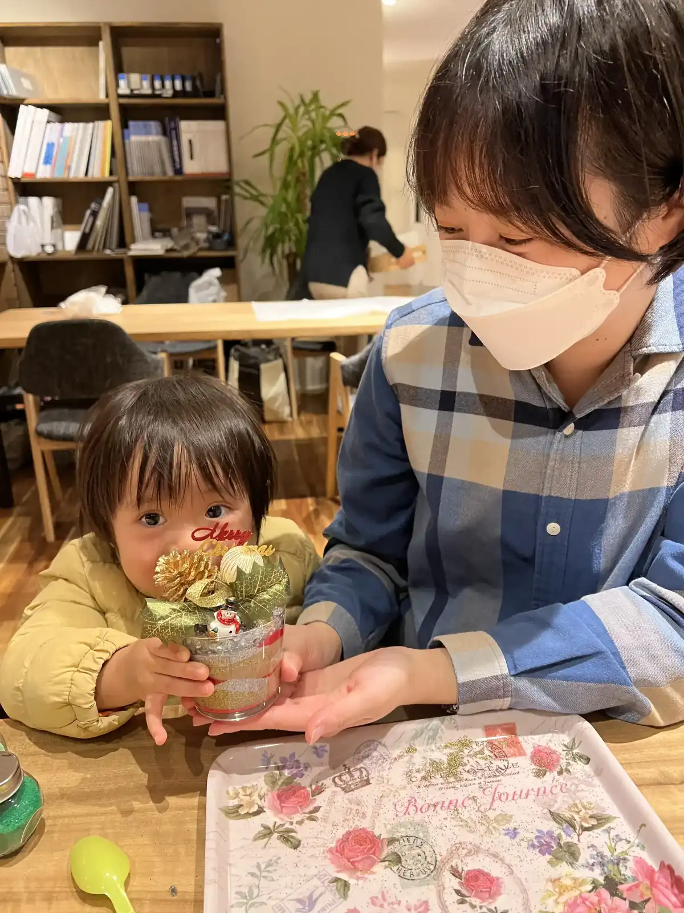

「福岡・博多で企業の出張イベントを企画したいけれど、何をやれば喜ばれるだろう？」——社員旅行、周年記念、顧客感謝祭、福利厚生イベント。担当者様の悩みは尽きません。カラーサンドアートの出張ワークショップなら、3歳のお子様から大人まで誰でも夢中になり、準備も片付けもすべてお任せ。福岡・博多を拠点に全国へ出張し、これまで500回以上のイベントをお手伝いしてきました。
「アート出張」を福岡・博多でお探しの企業様へ
体験型のイベントコンテンツは、ただ「楽しい」だけでなく、参加者の手元に“作品”という思い出が残るのが大きな魅力です。サンドアートは、色とりどりの砂を瓶やグラスに重ねて、世界にひとつのアートを作る体験。完成した作品はそのまま持ち帰っていただけるので、会社のロゴ入りの台紙やノベルティと組み合わせれば、イベント後も手元に残る販促ツールにもなります。
福岡市内であれば出張費は無料。博多・天神エリアのオフィスやホール、郊外の住宅展示場まで、フットワーク軽く伺います。福岡県外への「アート出張」も全国47都道府県に対応していますので、本社が県外の企業様もお気軽にご相談ください。
企業の出張イベントにサンドアートが選ばれる5つの理由
1. 老若男女、誰でも必ず作品が完成する
サンドアートに特別な技術は要りません。色を選んで砂を入れるだけのシンプルな工程なので、3歳のお子様からご年配の方まで、絵が苦手な方でも必ず美しい作品が完成します。「できた！」という達成感が、参加者全員の満足度を引き上げます。
2. 準備・片付けがゼロ、担当者様の負担なし
材料の手配、テーブルのセッティング、当日の進行、後片付け、清掃まですべて講師が担当します。ご担当者様は当日、参加者と一緒に楽しんでいただくだけ。イベント運営の手間を最小限に抑えられるのは、忙しい総務・人事・販促ご担当者様にとって大きなメリットです。
3. 参加者同士の交流が自然に生まれる
「何色にしますか？」「きれいですね」——手を動かしながらの作業は、初対面の人同士でも自然に会話が生まれます。普段は接点の少ない部署同士の社員交流や、顧客と社員のコミュニケーションのきっかけづくりにぴったり。チームビルディング研修としても活用いただいています。
4. 家族参加型イベントで満足度が高い
社員のご家族を招くファミリーデーや、顧客感謝祭のような親子連れの多いイベントでは、大人も子どもも一緒に夢中になれるのが強みです。「子どもの付き添いのつもりが、気づいたら大人のほうが集中していた」というお声を毎回いただきます。
5. 季節やテーマに合わせて自由にアレンジできる
クリスマス、ハロウィン、母の日、夏祭りなど、季節やイベントのテーマに合わせてデザインや色味を変えられます。周年カラーやブランドカラーに合わせた砂のご用意も可能です。名入れ台紙と組み合わせて記念品にできるクリップサンドも販促ノベルティに人気です。周年記念イベントのアイデアもぜひ参考にしてください。

こんな企業イベントで活躍します
- 社員旅行・社内レクリエーション：宿泊先やホールで、部署を越えた交流の時間に
- 周年記念・式典の余興：記念品づくりを兼ねた参加型コンテンツに（アイデア集はこちら）
- 顧客感謝祭・ファミリーデー：親子連れのお客様に大人気（企業イベント活用例）
- 福利厚生・社員のご家族向けイベント：満足度の高い体験コンテンツに
- 住宅展示場・モデルハウスの集客イベント：来場のきっかけづくりに（集客のコツ）
- 商業施設・ショッピングモールの催事：滞在時間を延ばす体験ブースに（モール催事の活用法）
出張イベントのお見積り・ご相談
人数・ご予算・ご希望の日程に合わせてプランをご提案します。
サービス内容の詳細は企業・集客イベント向けサンドアート出張（福岡・博多／全国対応）のページをご覧ください。
料金とプランの目安
- 基本料金：1人 2,000円〜（人数・内容により変動）
- 対象年齢：3歳〜大人まで
- 所要時間：1作品あたり約20〜30分（入れ替え制も可）
- 出張費：福岡市内無料／市外・県外は交通費を別途ご相談
- 対応規模：10名程度〜1日数百名の大型イベントまで
「予算内でどこまでできる？」「短時間で大人数をさばきたい」といったご相談も歓迎です。近隣施設・他部署との合同開催でコストを抑える方法もご提案できます。
イベント開催までの流れ
- お問い合わせ（LINE・メール・お電話）
- イベント内容・人数・ご予算・日程のヒアリング
- お見積もりとプランのご提案
- 日程・会場の確定
- イベント当日（準備から片付けまですべてお任せ）
依頼者（企業様）の声
「毎年イベントのコンテンツ選びに悩んでいたのですが、サンドアートを導入してからは『今年も楽しみにしています！』というお声をいただくようになりました。
会場全体が楽しそうな雰囲気で、完成した作品を囲んで初対面同士の方が自然に会話している姿に感動しました。準備から片付けまでお任せできるので、運営側の負担も少なく本当に助かっています。」
よくあるご質問
福岡・博多以外への出張も可能ですか？
はい、福岡・博多を拠点に全国47都道府県へ出張対応しています。福岡市内は出張費無料、それ以外の地域は交通費を別途ご相談させてください。遠方の場合はオンライン開催という選択肢もあります。
何名くらいの企業イベントから対応できますか？
10名程度の少人数から、入れ替え制で1日数百名規模のイベントまで対応可能です。社員旅行・部署単位の研修から、商業施設や住宅展示場の集客フェアまで、規模に合わせてプランをご提案します。
準備や片付けは会社側で必要ですか？
いいえ、材料の持参からテーブルセッティング・進行・片付け・清掃まですべて講師が担当します。ご担当者様は当日見守るだけでOKです。
料金はどのくらいかかりますか？
基本は1人2,000円〜です。人数・開催時間・デザイン内容・会場によって変動しますので、まずはLINEで無料お見積りをご依頼ください。
福岡・博多のアート出張はnicolonへ
24時間以内に返信いたします。イベントの規模・ご予算に合わせて最適なプランをご提案します。まずはお気軽にご相談ください。

原野 玲未REMI HARANO
日本サンドアート協会 認定講師 / Webデザイナー
福岡県在住、5児の母。企業イベントから個人レッスンまで、福岡・博多を拠点に全国へサンドアートの魅力をお届けしています。
「誰でも簡単に、美しい作品が作れる」をモットーに、参加者全員が笑顔になれるワークショップを心がけています。